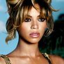
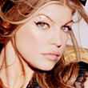
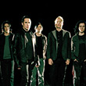

Stream FM:
Здесь на радио вы услышите все многообразие музыкальных жанров стилей и направлений. Именно здесь собранны все самые ярчайшие представители современной популярной музыки а так же хиты и новинки. Поднимайте себе настроение. Слушайте и наслаждайтесь

Stream Pop – R&B:
Музыкальные жанры ставшие популярнейшими в современном 21 веке. R&B - это ритм и блюз, незабываемый и приятный вокал и танец Это душа истенного почитателя качественного баунса без которого не обойдется ни одна гламурная вечеринка и в то же время тихий романтический вечер. И конечно задающее настроение неутомимая поп музыка. И все это радость и любовь, друзья и эмоции здесь на радио

Stream Rap & Hip-Hop:
Музыка заполнившая в последнее время все: от мировых и отечественных хит парадов до ночных клубов и молодежных тусовок. Рэп - это ритм и типично американская поэзия, это молодость, это настроение, это стиль. Здесь на радио любой даже самый придирчивый рэп-слушатель сможет прослушать треки по своему вкусу, а также ознакомиться с этим распространенным жанром.
Stream Rock:
Хеви метал, хардкор, треш, дум, а так же панк рок и все другие направления и многообразие стилей, тяжелые ритмы, а так же не забываемые и величайшие легенды рок музыки собранны в полной коллекции и в хорошем качественном звуке на радио. Сделай погромче и оторвись
